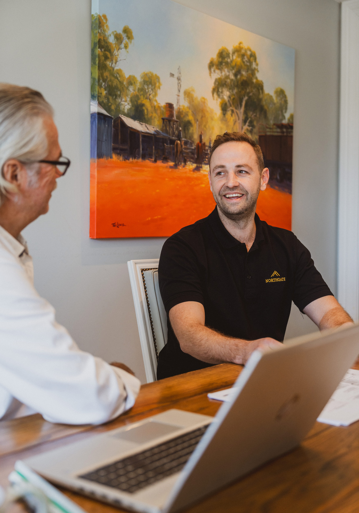

Licensed Builder (Class 1 and 2)
Check Your True Move-In Date
125+ homeowners used this tool last month
Real Build Timeline Checker™
Instant
Results on screen.
Accurate
50+ projects data.
Pro Method
Not guesswork.
- Type and complexity
- Site access
- Builder engaged
- Approval stage
- Council or heritage
- Decision complexity